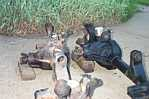
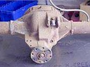
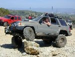
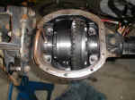
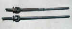
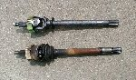

|
|
|

| |

Jeep Tech Axles
| Welcome to 4x4Wire! You, your 4x4, and Access... | Short Cuts | |
|
More on 4x4Wire:
4x4 Tech
| 4x4 Reviews
| Destinations
| 4x4 Access
More 4x4 Tech 4x4Wire: Jeep Tech | Jeep Projects | Jeep News | Jeep Reviews | Jeep Gallery Toyota FAQ | Toyota Projects | Toyota Maintenance | Toyota 4Runner | Toyota Tech | Hot Toy | Insider Mitsubishi on 4x4Wire | Mitsubishi Projects | Mitsubishi Reviews | Mitsubishi Tech Intro | Isuzu News | Isuzu Tech | Isuzu Events | 4x4Wire Gallery |
|
The Jeep Technical axle pages feature articles about stock Jeep axles and axle conversions and upgrades on Jeep vehicles. Various upgrades are covered including one piece axle swaps, full floating swaps, ring and pinion swaps, locker installations, etc.

|
YJ front end conversion Last month we covered swapping a Ford 9" in to the rear of a Jeep. This month we will be covering the front portion of the swap which includes a Dana 44 axle, spring-over suspension, shackle reversal, and a high steer conversion. |

|
Swap a Ford 9" axle in to the rear of your YJ. Wanting to switch the Jeep to larger tires, I started to take a look at what upgrades will be needed to run without instant breakage to the weak Dana 35C and Dana 30. After researching every option available for axles, I decided on swapping in a Ford 9" axle. |
|  |
High Pinion Dana 30 Upgrade for TJs
If you'd like to get your front drive shaft up and away from the rocks, gain strength in the ring and pinion set and reduce the chance of a pinion seal leak a non-disconnect XJ front end may be the upgrade you need for your TJ. |
|  |
Fixing the weak link in the Ford 8.8 rear axle
Ford 8.8" rear axle swaps are becoming more popular for the Jeep XJ, YJ, and TJ. Swappers are aware of the strong 31-spline shafts and 8.8" ring gear in a package that fits the Cherokee and Wranglers well. The 8.8's C-clips, however, aren't the only potential weak point. As Mark Svare found out when he spun the center casting, the connection between it and the axle tubes could be questionable as well. |

|
Getting the Shaft
Eventually, you will have a bad bearing, bent shaft, or broken shaft and you will need to swap out a shaft. Jeff goes over the basics of swapping regular non c-clip axles shafts on the Dana 44. Superior Axle & Gear provides some heavy duty shafts to replace a stock shaft that was bent. |

|
Ox Locker Install in a Cherokee XJ Dana 44
Phase II of the Project SkyMiles Cherokee XJ continues with the installation of the new OX Locker in the Dana 44 rear axle. The OX works great, and like a spool it's completely predictable. The OX Locker makes 4-wheeling fun! |

|
CTM Racing Dana 44 U-Joints
So you spent the money on a custom Dana 44 with all the bells and whistles for the front of your Jeep. Now that you have progressed to the extreme trails, you discovered you need to step up from the 33" tires you are running. Now you break front axle u-joints regularly. So what are your options? Recently Jack Graef from CTM Racing came out with another solution, unbreakable u-joints. |

|
Cherokee XJ Dana 44 Axle Upgrade
Phase II of the Project SkyMiles Cherokee XJ starts with a stronger rear axle. There are many good choices to upgrade from the Dana 35 (almost anything!), and we explore a bunch of them. There are two stand-outs, however. The XJ Dana 44 and the Explorer Ford 8.8" have the right features for a painless upgrade. |

|
Project SkyMiles "Phase II"
Project SkyMiles "Phase II" is a combination of upgrades designed to strengthen the Cherokee XJ, make it more versatile, and position the Jeep for future upgrades. The main pillars of Phase II are the addition of a Klune-V 4:1 planetary underdrive and the switch to a Dana 44 rear axle. The upgrade was far from a simple two-step upgrade, however. |

|
Superior
Super 35 Axle Truss Superior Axle & Gear has come out with a new product for Jeep YJ's and TJ's that adds a measure of strength to your Dana 35 - The Super 35 Axle Truss. |

|
Compare the old Spicer 297-X to the new 760-X axle shaft U-joints
Spicer has decided to phase out the old reliable 297-X U-joint and replace it with the new 760-X. Will it be an improvement or a problem? Only time will tell. Until then, check out the close up comparison photos in the article and judge for yourself. |

|
Quick Jeep Dana 44 Spindle Nut
If your Jeep has half ton internal hubs, chances are you have the three piece spindle nuts. The inner nut sets the tension on the bearing, the lock washer slides down the slot on the spindle and a pin on the inner nut goes in a hole in the lock washer, and the outer nut holds it all in place. Sometimes, you get lucky and that lock washer slides right down and the pin in the nut goes right in a hole in the lock washer, sometimes it doesn't. Some Ford Dana 44s use a self locking spindle nut that does not require aligning the pin and makes installation much easier. |

|
Changing an Axle Shaft U-Joint at Home
Changing front axle shaft U-joints, what could be simpler? If you are asking that question you have obviously never dealt with severely rusted joints from an older street driven Jeep that's never been in 4wd and has an open knuckle front end. Many a Jeeper has discovered that newly acquired Jeep that has 'never been off-road' equals rusted front axle shaft U-joints that are thoroughly seized into the shafts as well. |

|
ARB Lockers/Gears in a Dana 30/35 Cherokee XJ
How can my sleeper Cherokee with a baby 3.5" lift and tiny 31" tires keep up with the "real" Jeeps? My Secret Weapons are my two ARB differential lockers, front and rear. With two lockers, I go where everyone else goes. I'm dragging and scraping to be sure, but I get there! |

|
Welding Axle Shaft U-Joint Caps If you are finding your Dana 44 front axle upgrade just isn't cutting it or you can't afford a front axle upgrade, welding in the u-joint caps can help. Welding in the caps helps saves both axle shafts from being damaged and it provides an early warning system. |

|
YJ Transformation
Is it possible to build a YJ with a spring over suspension, 35x12.5 Swamper SSRs, Dana 44 axles, a Detroit Locker in the rear, an ARB in the front, a ladder bar, high steering, an Atlas tranfer case and more, in a month, on a tight budget, in an average garage? Yes! |

|
Jeep Wrangler YJ Rear Axle Swap: Reverse Cut Dana 60 I already installed a reverse-cut Dana 44 from into the front of my YJ, so it was time to upgrade the rear. A reverse cut Dana 44 in the rear is not much of a strength upgrade, so I decided to use a reverse cut Dana 60. After finding out how easy it was to build the rear reverse cut Dana 60, I'm surprised more people don't do it. |

|
FourXDoctor Diff Guards
While on the trail I've seen a few trucks slam their differential covers right into rocks, denting the covers. Not only are the differential covers in danger but also the gears and carrier. If you think about it the only thing protecting your axle's innards from a rock or stump are a few fractions of a inch worth of stamped steel. |

|
Shaved Dana 60
The 60 has one "huge" problem. And I say huge, the pumpkin is huge and it hangs down over an inch more than the 44. Now, I have been driving a 44 for way too many years and I know what obstacles, rocks, etc. that I can clear by experience. A Shaved 60 could provide more beef and not compromise clearance. |

|
Jeep Wrangler YJ Front Axle Swap: Reverse Cut Dana 44 My YJ Dana 30 had been upgraded to the point there wasn't anything left to do. It had become a stout little unit which was perfect for a part time trail vehicle. Since I was planning to put on tires larger than the 33" tires I was currently running, I thought it was time to upgrade the front axle to a Dana 44. |

|
XJ Axle Upgrades Paul Weitlauf gives a detailed look at how he performed some major upgrades to his XJ axles without spending major money in the process. A full floating 5 on 5.5 wheel bolt pattern reverse rotation Dana 30 front and a Dana 44 rear are the results of his efforts. |

|
Superior
Axle & Gear's New Super 35 Detroit Kit Superior Axle & Gear has refined their extreme duty Super 35 kit to include the venerable Detroit Locker. This kit will truly bulletproof your Dana 35 rear axle! |

|
Superior
Axle & Gear's New Super 4.88 Gears Superior Axle and Gear has finally introduced their new 4.88 gears for the AMC Model 20, Dana 30 (standard and reverse rotation) and the Dana 35. You are no longer limited to 4.56 gears. The additional 7% torque multiplication roughly makes up the difference between 33-in and 35-in tires. If you plan on running bigger meats, then check out these new gears! |
|  |
Currie
Ford 9" High Pinion Install The Dana 35C which comes on many Jeep products is hardly heavy enough for the modifications which many of us do to our vehicles. Currie Enterprises offers a bolt-in replacement which is bullet-proof and will improve your driveline angles. |
|  |
Upgrade Your Dana 30 Front with an ARB Air Locker
I had been considering swapping out my Dana 30 and Dana 35c axles for some time. However, the Pro-Comp Coil Conversion Suspension kit that I have did not offer any axle options other than the stock YJ Dana 30 and 35c. So, I decided if I want to have a stronger front end, I was going to have to bite the bullet and upgrade my Dana 30. |
|  |
Wrangler Dana 30 Front Warn Hub Conversion
Bryan Archambeault gets serious with his Dana 30 with a Warn hub conversion kit for his Wrangler. The kit adds manual locking hubs and gets rid of the troublesome vacuum disconnect. |
|  |
Weak Link Some Jeep Grand Cherokees have constant velocity joints in the front axles. Follow along as we upgrade to the more common Spicer style u-joint. |

|
Dana 44 and Dana 60 Axle Swap Project Jeep Therapy gets a Dana 44 front and a Dana 60 rear axle custom built by Currie and Tri-County respectively. These custom axles are bolt in replacements for the lighter duty stock axles. |

|
Big Beef Axle Supreme Don't be like "Wooden Wheel Danny", beef up your Wrangler. The Dana 44 used in some Cherokees and Commanches makes a great low buck donor for your Wrangler. It has the beef and the right width and wheel bolt pattern. |

|
Setting Your Pinion Angle It isn't black magic and it doesn't require any special tools other than an angle finder. A properly set pinion angle will stop vibrations and increase the life of your u-joints. |

|
PowerTrax Lock-Right Install for the Jeep D35 C-Clip
Previous to the installation of my Lock-Right, I had not worked at all on any rear axle. I had changed the axle lube, but that is it. Understandably, I was somewhat apprehensive about undertaking what appeared to be a difficult project. Now that it is complete, I realize that I had nothing to be concerned about, and I would recommend it to anyone who has any mechanical skill whatsoever. |

|
Installing
a Lockright Locker in a Jeep Dana 30 Randy Wheeler upgrades the front axle in his 1991 Wrangler with a Lockright Locker. The installation is surprisingly easy and the cost cannot be beat. |

|
Tractech Detroit Gearless Locker Here it is: the much anticipated Tractech Detroit Gearless Locker. The new locker is easy to install, locks and unlocks automatically as needed, operates quieter than most other automatic lockers, and has no internal gear teeth. Read all about the installation of this locker in a Jeep Wrangler. |

|
Ultimate Jeep Dana 30: Warn Hub Conversion Ron Hollatz, in his quest for the ultimate Dana 30, upgrades the front axle using the Warn Hub conversion kit. The hub conversion kit allows newer YJs and TJs to have manual locking hubs. |
|
|
Ultimate Jeep Dana 30: Warn Axle Shafts Ron Hollatz, in his quest for the ultimate Dana 30, upgrades the front axle using the Warn axle shaft conversion kit. Get rid of those little 260x u-joints in favor of some 297x u-joints. |
|
|
Ultimate Jeep Dana 30: Detroit Soft Locker Install
Ron Hollatz, in his quest for the ultimate Dana 30, installs a Detroit Soft Locker. The Detroit Soft Locker is an old school favorite know for its great reliability. |
|
|
Ultimate Offset Pumpkin Dana 44 Rebuilding a '71 CJ-5 Dana 44 for a Project Pieces and Parts. This axle is the best factory rear end for any '41-'71 short Jeep. |
|
|
Dana 30 Disk Brake Conversion Terry Howe does a disk brake conversion of a drum brake Dana 30 for Project Pieces and Parts. Everything you need to know to swap disks on your '72-'76 CJ with drum brakes. This article also explains why the Dana 30 is a good low buck axle upgrade for '45-'71 CJs. |
|
|
Center Axle Disconnect Theory and Repair Many manufacturers install Center Axle Disconnect (CAD) instead of old-style manual locking hubs. Knowing how CAD works allow on-the-trail troubleshooting and even manual cycling the mechanism on the trails. |
|
|
Narrowing a Dana 44 Front Axle To Fit a CJ John Nutter explains the "do it yourself" way to swap a Dana 44 front axle into your CJ. Doing it yourself can save you lots of money for other modifications on your Jeep. |
| Related Information: |